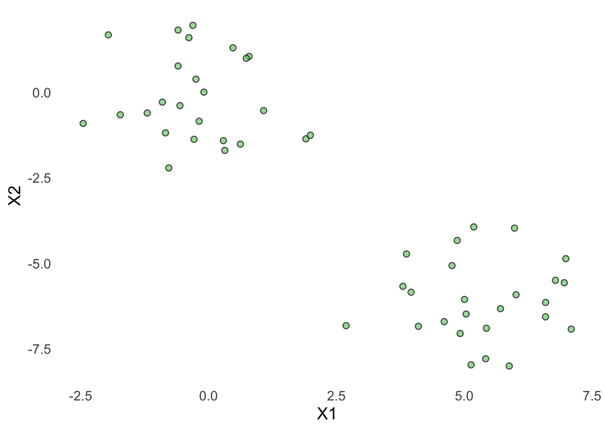
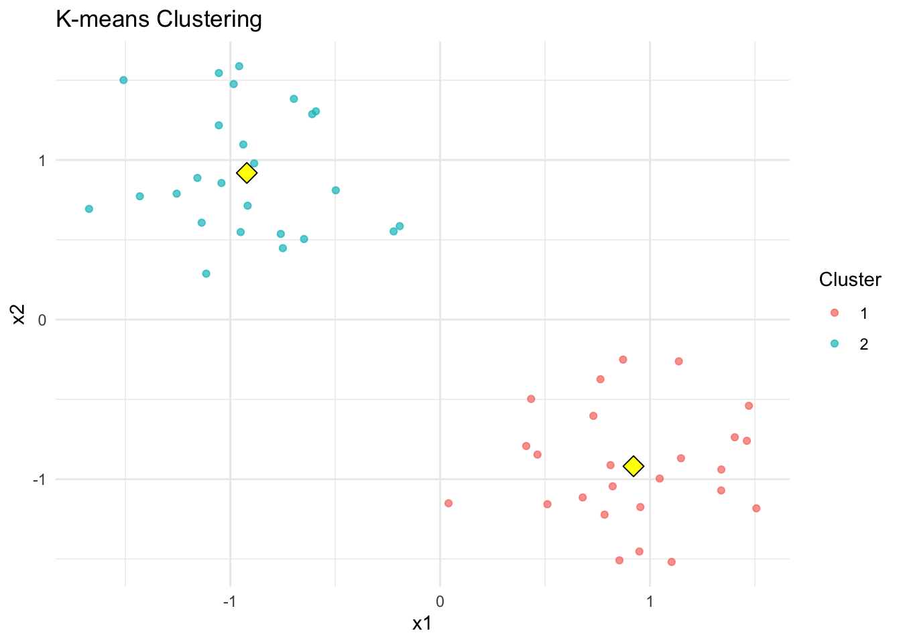
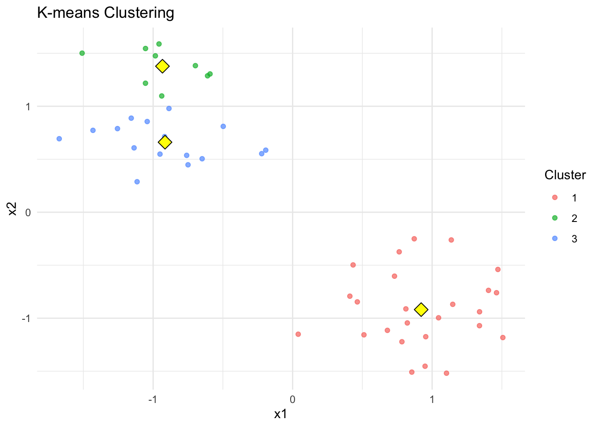
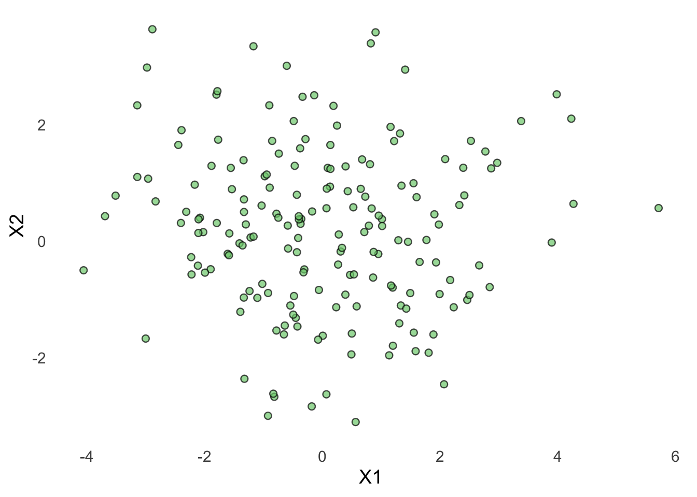
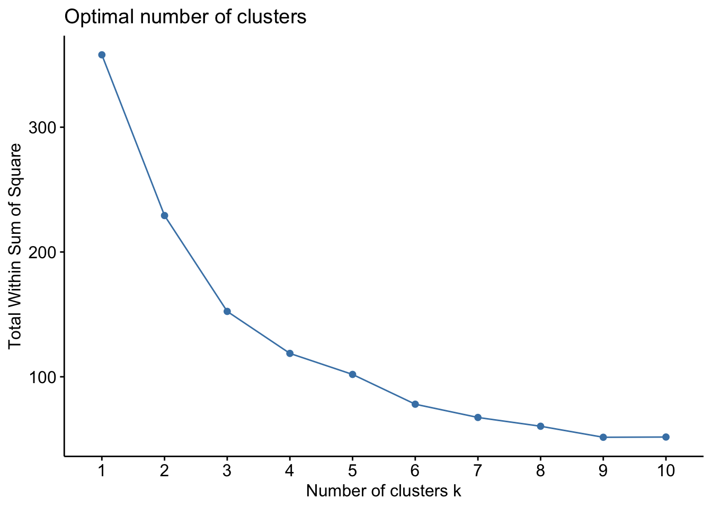
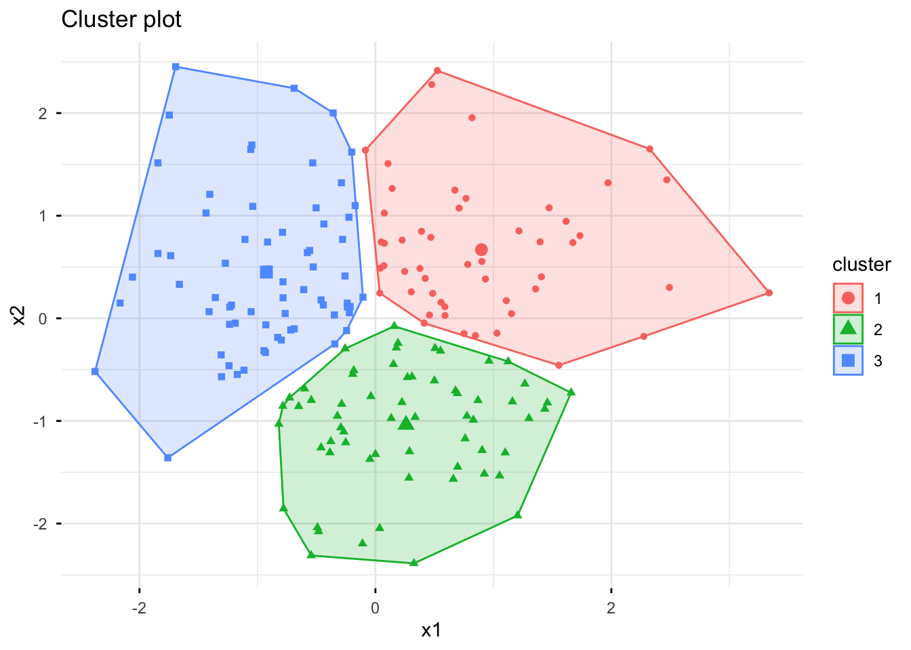

# Clearing the environment
rm(list = ls())
# Loading packages
library(tidyverse)
library(factoextra)
source("Functions/EDA_functions.R")
source("Functions/Cluster_functions.R")9 Cluster Analysis: Lab 1
Introduction to Cluster Analysis and the Workflow
In this chapter we will use k-means clustering to identify groups of similar observations in a dataset. K-means is an unsupervised learning method. This means that we do not have an outcome variable that we are trying to predict. Instead, the algorithm searches for structure in the data and groups observations into clusters based on how similar they are.
You are expected to have read Chapter 12, “Unsupervised Learning,” in An Introduction to Statistical Learning with Applications in R before starting this chapter. For this lab, focus especially on Sections 12.2.1, 12.2.4, and 12.2.4.1. The lab begins with a K-means clustering exercise that closely follows the example presented in Section 12.5.3, “K-Means Clustering. You might want to review this example before starting the exercise.
For the second lab on K-means clustering, we recommend that you also read Section 12.2.2 on Principal Components Analysis (PCA). You can skip the details of how principal components are calculated. Instead, focus on understanding why we use PCA, what PCA does to the data, and the basic intuition behind the method.
You should also review the previous lab, where we introduced the three methods covered in this part of the course.
In this course, when working with K-means clustering, we will follow this basic workflow:
- Explore the data.
- Select the variables to include in the cluster analysis.
- Standardize the variables so that differences in scale do not influence the clustering.
- Choose the number of clusters, \(k\).
- Run the K-means algorithm.
- Inspect, interpret, and visualize the resulting clusters. If the data contain more than two variables, we can use PCA to represent the clusters in two dimensions.
9.1 Basic K-means
9.1.1 Learning objectives
After completing the lab, you should be able to:
- explain what k-means clustering is used for;
- explain why variables are often standardized before clustering;
- run a k-means cluster analysis in R;
- explain what the value of \(k\) represents;
- use an elbow plot to help choose \(k\);
- add cluster membership back to the original data;
- visualize and interpret a clustering solution.
9.1.2 Part 1: Your First K-Means Cluster Analysis
In this exercise, we will work with a simulated dataset containing two variables and two underlying groups. Because the data are simulated, we know that there are two groups. However, we will not provide this information to the K-means algorithm. Instead, we will investigate whether K-means can identify the groups based only on similarities and differences between the observations.
The idea for the exercise is based on the Lab presented under section 12.5.3 Clustering in ‘An Introduction to Statistical Learning with Applications in R’.
9.1.2.1 Setup
Start by clearing the environment and loading the packages and functions used in the lab.
9.1.2.2 Generate the data
Run the following code (you do not need to understand this code):
set.seed(2)
df <- data.frame(
x1 = rnorm(50),
x2 = rnorm(50)
)
# Create a mean shift for the first 25 observations
df$x1[1:25] <- df$x1[1:25] + 5
df$x2[1:25] <- df$x2[1:25] - 6The dataset contains 50 observations and two variables, x1 and x2.
9.1.2.3 Explore the data
Before performing the cluster analysis, visualize the two variables using the course function:
scatterplot(
data = df,
xvar = x1,
yvar = x2,
xlab = "X1",
ylab = "X2"
)
9.1.2.4 Select the variables for clustering
For this exercise, we will use both variables. Therefore we will not do anything.
cluster_data <- df9.1.2.5 Scaling: Standardize the variables
K-means calculates distances between observations. Variables measured on larger scales can therefore have a greater influence on the clustering. We will standardize the variables before continuing.
cluster_data_scaled <- scale(cluster_data)Question: Why do we standardize variables before performing K-means clustering?
9.1.2.6 Run K-means clustering
We know that the simulated data contain two groups. We therefore begin by asking K-means to identify (k=2) clusters (k = centers):
set.seed(2)
# k = centers
km <- kmeans(
cluster_data_scaled,
centers = 2,
nstart = 25
)How many observations were assigned to each cluster? You can examine this using:
table(km$cluster)
1 2
25 25 9.1.2.7 Visualize the clusters
We can now visualize the results using our course function:
plot_kmeans_clusters(
data = cluster_data_scaled,
var1 = "x1",
var2 = "x2",
km = km
)
The colors represent the clusters identified by K-means. You can also see the centroids (in yellow).
Questions: Does K-means appear to have successfully identified the two groups? Compare the cluster plot with the original scatterplot. What has K-means added to our understanding of the data?
9.1.2.8 What happens if we choose the wrong (k)?
In this example, we know that there are two underlying groups because we generated the data ourselves. With real data, however, we generally do not know the appropriate number of clusters in advance.
Run K-means again, but this time specify (k=3):
set.seed(2)
km3 <- kmeans(
cluster_data_scaled,
centers = 3,
nstart = 25
)Visualize the results:
plot_kmeans_clusters(
data = cluster_data_scaled,
var1 = "x1",
var2 = "x2",
km = km3
)
Compare the results for (k=2) and (k=3).
Questions: What happens when you ask K-means to find three clusters? Does the existence of three clusters in the output mean that there are actually three meaningful groups in the data? What does this tell you about the importance of choosing (k)?
9.1.2.9 Key takeaway
K-means will create the number of clusters that we ask it to create. It does not determine the appropriate value of (k) for us. In this exercise, we knew that (k=2) was appropriate because we generated the data. With real-world data, choosing (k) is an important part of the cluster analysis.
9.1.3 Part 2: Unknown Number of Groups
In the previous exercise, we knew the appropriate value of k because we generated the data ourselves. In practice, however, we usually do not know how many meaningful groups exist in the data.
In this exercise, you will work with a new dataset. Although the data are simulated, you should treat them as if they were real data. You do not know how many underlying groups were used to generate the observations.
Your task is to explore the data, choose a reasonable value of k, perform K-means clustering, and interpret the resulting clusters.
9.1.3.1 Setup
Start by clearing the environment and loading the packages and functions used in the lab.
# Clearing the environment
rm(list = ls())
# Loading packages
library(tidyverse)
library(factoextra)
source("Functions/EDA_functions.R")
source("Functions/Cluster_functions.R")9.1.3.2 Import the data
Import the dataset:
df <- read.csv("Data/kmeans_data2.csv")9.1.3.3 Explore the data
Visualize the relationship between the two variables using the course function:
scatterplot(
data = df,
xvar = x1,
yvar = x2,
xlab = "X1",
ylab = "X2"
)
9.1.3.4 Select the variables for clustering
cluster_data <- df |>
select(x1, x2)9.1.3.5 Scaling: Standardize the variables
cluster_data_scaled <- scale(cluster_data)9.1.3.6 Choose the number of clusters
One way to investigate a reasonable value of k is the elbow method. The idea is to run K-means repeatedly using different values of k and compare the within-cluster sum of squares. Run the following code:
set.seed(123)
fviz_nbclust(
cluster_data_scaled,
kmeans,
method = "wss",
k.max = 10
)
As k increases, the within-cluster variation will decrease. However, at some point, adding another cluster provides only a relatively small improvement. We look for the point where the reduction begins to level off. This is often referred to as the elbow.
Questions:
- What happens to the within-cluster sum of squares as k increases?
- Where do you see an elbow in the figure?
- Based on the elbow method, what value of k would you choose?
- Is the choice completely unambiguous?
9.1.3.7 Run K-means
Now use the value of k that you selected. For example, if you selected k = 3, you would run:
set.seed(123)
km <- kmeans(
cluster_data_scaled,
centers = 3,
nstart = 25
)Replace 3 with the value of k that you selected if necessary. Examine the number of observations in each cluster:
table(km$cluster)
1 2 3
51 62 67 Questions: - How many observations were assigned to each cluster? - Are the clusters approximately equal in size? - Would equal cluster sizes necessarily be expected in real data?
9.1.3.8 Visualize the clusters
In this lab, the observations are easy to visualize because the dataset contains only two variables. If the dataset included more than two variables, as in the next lab on K-means Cluster Analysis, we could first apply Principal Component Analysis (PCA) to reduce the dimensionality of the data. We could then visualize the observations by plotting their scores on the first two principal components, which capture as much of the variation in the original data as possible.
To simplify our workflow, we will use another R package, called factoextra, to visualize the results of our cluster analysis from this point onward. The package produces clear and informative plots and can also automatically apply PCA before plotting when the dataset contains more than two variables.
Plot our clusters with factoextra:
fviz_cluster(
km,
data = cluster_data_scaled,
geom = "point",
ellipse.type = "convex",
ggtheme = theme_minimal()
)
Questions:
- Do the resulting clusters correspond to the patterns you observed in the original scatterplot?
- Are the clusters clearly separated?
- Are there observations close to the boundaries between clusters?
- Does the value of k you selected still appear reasonable after inspecting the clustering result?
9.1.3.9 Interpret the clusters
We standardized the variables before running K-means because the algorithm is based on distances between observations. However, for interpretation, it is often more useful to return to the original scale of the variables.
First, add the cluster assignments to the original data:
df$cluster <- factor(km$cluster)We can then calculate the mean of each original variable for each cluster:
cluster_summary <- df |>
group_by(cluster) |>
summarise(
n = n(),
mean_x1 = mean(x1),
mean_x2 = mean(x2)
)
cluster_summary# A tibble: 3 × 4
cluster n mean_x1 mean_x2
<fct> <int> <dbl> <dbl>
1 1 51 1.54 1.15
2 2 62 0.450 -1.22
3 3 67 -1.57 0.849The K-means algorithm was fitted using the standardized data, but the table above describes the resulting clusters using the original values of x1 and x2.
Questions:
- How many observations belong to each cluster?
- What is the average value of x1 and x2 in each cluster?
- How do the clusters differ from one another?
- How would you describe each cluster in words based on its original values?
So remember: Standardize for clustering; return to the original scale for interpretation.
9.1.3.10 Should we use the model?
Should we use the model in our firm? Is it a good model? In the next lab we will take what we learned during this lab and place it in the CRISP-process.
9.1.3.11 What have we learned?
In this exercise, the number of clusters was not given to us. Instead, we treated k as a decision that had to be made as part of the analysis.
Our workflow was:
- Explore the data
- Select variables for clustering
- Standardize the variables
- Investigate possible values of k
- Choose k
- Run K-means
- Inspect, visualize, and interpret the resulting clusters
The elbow method can help us choose a reasonable value of k, but it does not always provide one objectively correct answer. Choosing the number of clusters often requires combining statistical tools with visualization and substantive knowledge about the data.
9.1.3.12 A Compact K-means Workflow
When experimenting with different values of \(k\), it is convenient to keep the main steps in one code chunk. Change only the value of number of centers and re-run the chunk. Look at the plot.
set.seed(123)
# 1. Run k-means
km <- kmeans(
cluster_data_scaled,
centers = 3,
nstart = 25
)
# 2. Visualize the result
fviz_cluster(
km,
data = cluster_data_scaled,
geom = "point",
ellipse.type = "convex",
ggtheme = theme_minimal()
)